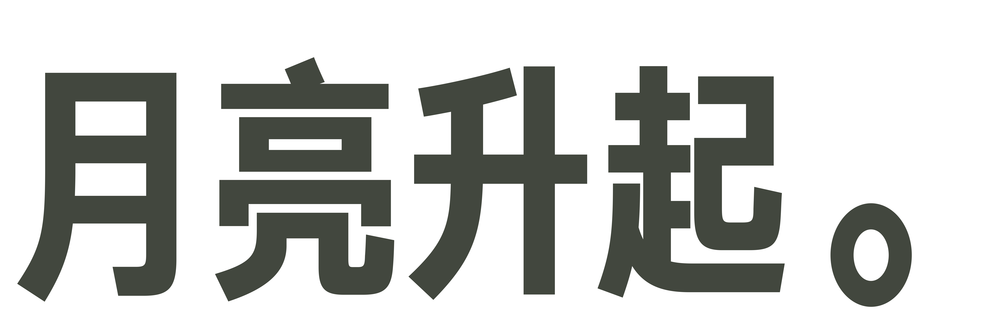
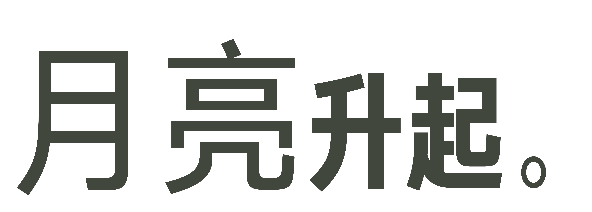
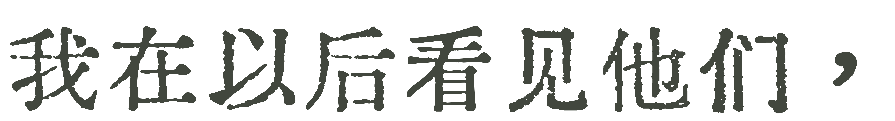
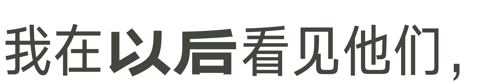
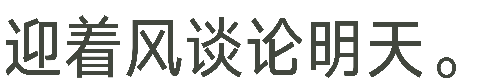
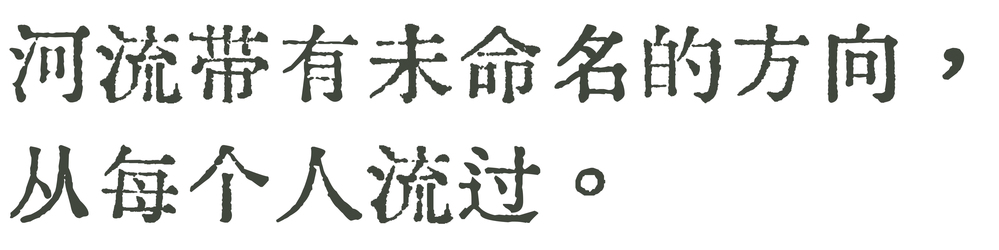
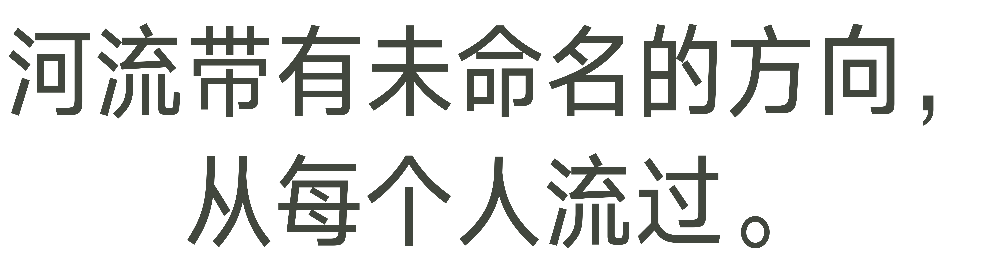
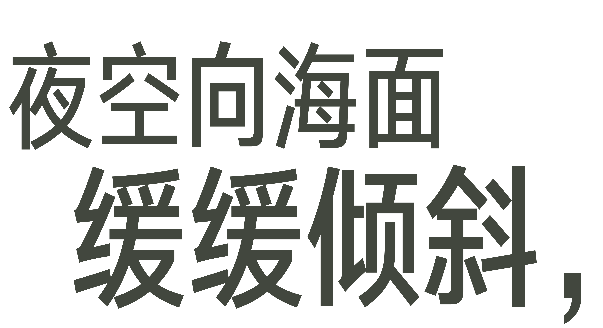
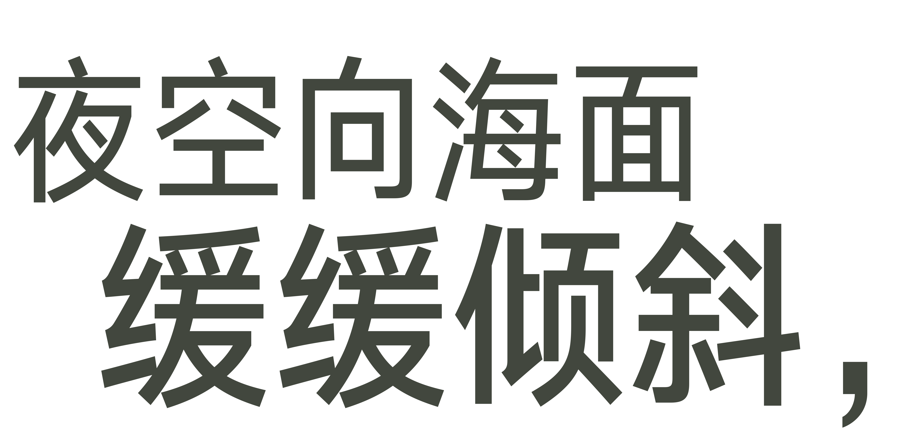
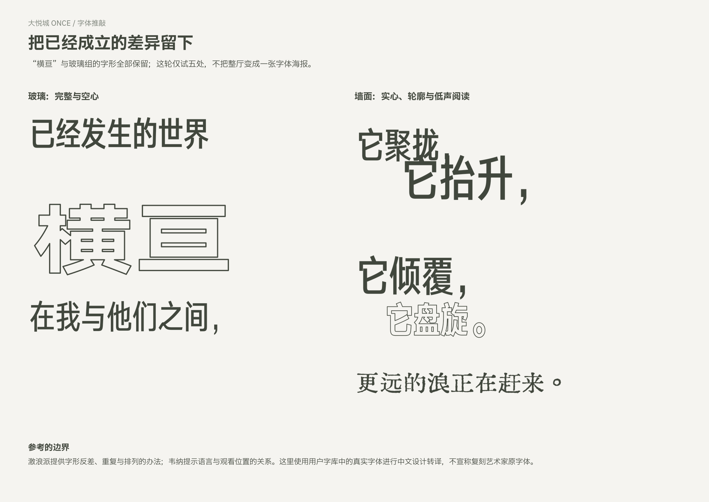

字体研究 / 2026.11.07 / 尚未定稿
让字形有分工，
让诗句能继续被读下去。
同一套字也能有不同的声音：关键字有明确的形状，连续的句子读得顺，少数重复与消散留给玻璃。此次试五处字样，摄影、空间位置和原诗均保持。
研究版可与现版逐句切换，也可进入三维空间比较。
01 / 月亮升起
大字不必整句同样重。让“月亮”的字面舒展，“升起”缩小而紧实，保留原来8°的上扬。


02 / 我在以后看见他们
“以后”稍宽、稍重，其余字保持相近的阅读节奏。与末段“他们”形成联系，但不把整句都做成重点。


03 / 迎着风谈论明天
去掉这句的仿旧笔触，使用字库中的原生旗黑X2 Book；把观看注意力留给句子和旁边的照片。

04 / 河流与方向
两行仍连成一句。第二行向右错开30厘米；没有把每个字弯成波浪，也没有改变地贴位置。


05 / 夜空向海面缓缓倾斜
顶部试更开敞的字面，两行保留尺度和粗细差异。实景核对发现横梁、灯轨仍会遮字；字形候选先保留，位置需要另选梁间，暂不定稿。


这些关系保持
“横亘”的轮廓、玻璃组两端的动词、低位的“更远的浪正在赶来”，以及 Growing Again 的重复与消退都保留。19处诗句图像与现版逐字、逐像素一致。

为什么这样取舍
用户字库的字形实测中，旗黑的不同原生宽窄适合连续阅读与关键词的对比。汇文保留给较轻的短句。装甲明朝另做了“月亮升起”的单句候选：反差锋利，但细横画远看偏弱，暂不扩展到整首诗。
马修纳斯的排版并非只用一种黑体。Dick Higgins回忆他把News Gothic与装饰性字面并置。韦纳在访谈中谈到从特窄Franklin Gothic到自己设计的Margaret Seaworthy Gothic。这里借鉴字形选择与组合的方法，不把中文候选说成他们的原字体。